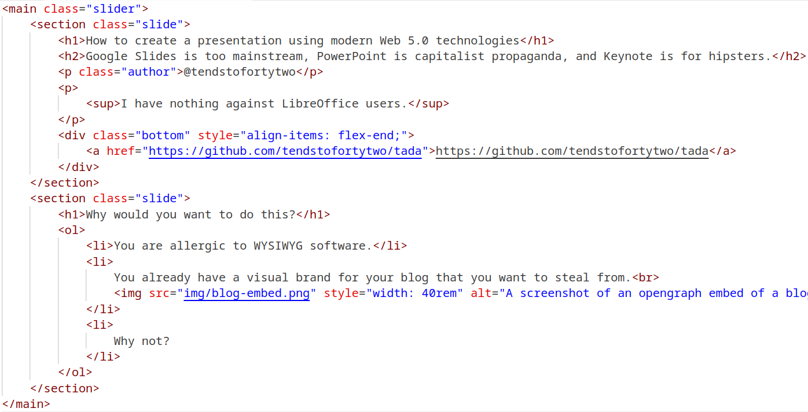
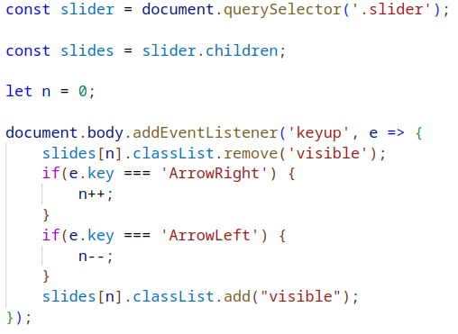
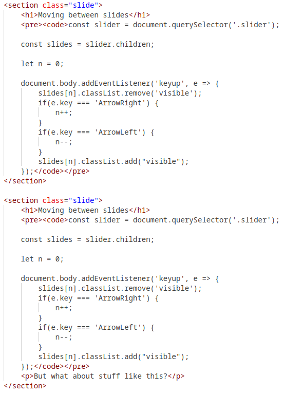
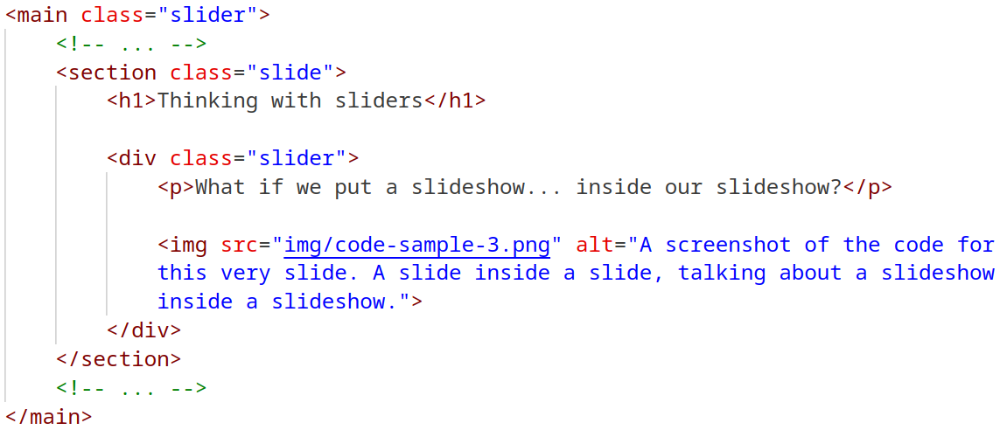
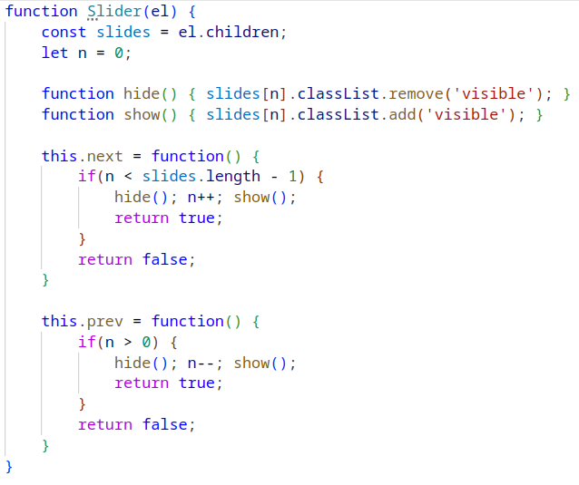
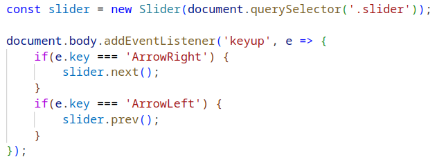
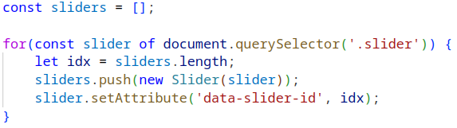
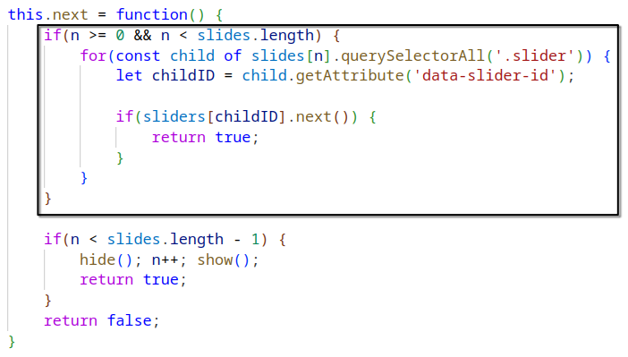
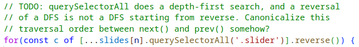

How to create a presentation using modern Web 5.0 technologies
Google Slides is too mainstream, PowerPoint is capitalist propaganda, and Keynote is for hipsters.
@tendstofortytwo
I have nothing against LibreOffice users.
Why would you want to do this?
- You are allergic to WYSIWYG software.
-
You already have a visual brand for your blog that you want to steal from.
- Why not?
Sliders
- A slider is an HTML element whose children are slides.
- A slide is an HTML element that is initially hidden, but eventually becomes visible as its parent slider advances.
-
Like this:

Moving between slides

But what about stuff like this?
Moving between slides
Could duplicate slides...
...but that sucks. We can do better.
Nesting sliders
What if we put a slideshow... inside our slideshow?
Sidequest: abstraction
Seems like we need to create a lot of sliders. Would be nice if we could make it easier to make them!


Nesting sliders


Code for prev() is left as an exercise to the viewer.
More details
-
Actually show multiple visible slides at a time.
- Otherwise multiple slides in a nested slider...
- ...will look like this.
- Start with the first slide hidden, for dramatic effect.
- Support starting at the N-th slide, for debugging/writing.
-
Whatever the fuck this is:
There's a reason I left
prev()for the reader. - Probably much more...
EOF